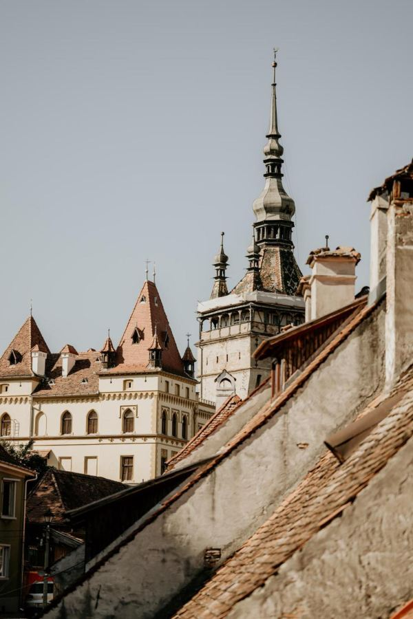

40 m²
Apartamentul cu candelabre
- 1 pat dublu mare + 1 pat de o persoană
- Vedere spre oraș
- Cafetieră în cameră
Sighișoara · Transilvania
O casă veche cu suflet, la poalele cetății.
Derulează și intră
Ușa e deschisă.
Intră, ești așteptat.
Lemn, cărămidă veche și lumină caldă.
Dormi sub grinzile vechi ale casei.
Iar la fereastră, cetatea.
Bun venit
Cărămidă aparentă, grinzi de lemn, mobilier de epocă și lămpi cu lumină caldă. Plus tot confortul de azi: aer condiționat, baie proprie și WiFi. Totul la câțiva pași de Turnul cu Ceas.
Camerele
Trei spații, fiecare cu personalitatea lui. Toate au baie proprie cu duș, aer condiționat, TV, minibar și WiFi.
40 m²
50 m²
15 m²
Filmul casei
Pune sunetul, urcă scările cu noi și deschide ușa camerei.
Ce spun oaspeții
9,8
Excepțional
363 de evaluări pe Booking.com
Note de pe Booking.com, noiembrie 2026.
„Locația, camera este superbă, autentică, plină de obiecte alese cu gust. Îmbinarea între lemn și cărămidă este perfectă.”
„Am descoperit o cazare care seamănă cu un adevărat muzeu, unde fiecare piesă de mobilier de epocă și fiecare detaliu arhitectural spun o poveste veche de secole.”
Citește toate recenziile„Totul a fost impecabil de curat și îngrijit, cu multă atenție la detalii. Proprietarul este foarte serviabil, amabil și prietenos!”
Unde ne găsești
Cafenelele și restaurantele sunt la ușă, iar Turnul cu Ceas și străzile vechi ale cetății, la câțiva pași.

Bine de știut
Rezervări
Sună-ne direct sau rezervă pe Booking. Răspundem repede.
Stradela Cetății 45, Sighișoara 545400
@casawebersighisoara